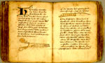

Handboekje voor een chirurgijn, gebaseerd op de Cyrurgie van Meester Jan Yperman. (Onvolledig.) Vlaams. Handschrift op papier, 130 x 95 mm. Vlaanderen, laatste kwart van de vijftiende eeuw. -- (BPL 3094)
Evenals het vorige handschrift toont dit Vlaamse boekje chirurgische instrumenten. Zij zijn in de tekst, die beschrijft hoe men bepaalde kwalen door chirurgische ingrepen behandelen kan, opgenomen omdat zij praktischer zijn dan een uitvoerige beschrijving in woorden.
Op de openliggende bladzijden (folia clxix verso - clxx recto) wordt de behandeling van een gecompliceerde beenbreuk uitgelegd. De passage komt overeen met het tweeëndertigste hoofdstuk van het zevende boek van Jan Ypermans Cyrurgie.
Dit oorspronkelijke boek, vroeg in de veertiende eeuw geschreven door de Vlaamse
heelmeester Jan Yperman, die zijn opleiding in Parijs genoten had, onderscheidt zich van
veel andere middeleeuwse werken van dit soort door zijn vaak verstandige aanpak van
heelkundige problemen. Verscheidene afschriften bewijzen dat het tamelijk verspreid is
geweest en langdurig in gebruik bleef.
Het hier getoonde handschrift is tamelijk jong. De tekst in is nog eens grondig opnieuw
bewerkt en herordend. Sommige stukken lijken aan andere bronnen ontleend. Welke precies is
nog niet bekend; het handschrift werd eerst kort geleden ontdekt en is nog maar
oppervlakkig bestudeerd.
Literatuur
- J. Deschamps, Middelnederlandse handschriften uit Europese en Amerikaanse bibliotheken. 2de, herz. dr. Leiden 1972, nr. 95.
- Vergelijk: De ‘Cyrurgie’ van Meester Jan Yperman. Uitg. door E.C. van Leersum. Leiden 1912.
| vorige pagina | top pagina |